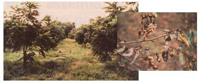
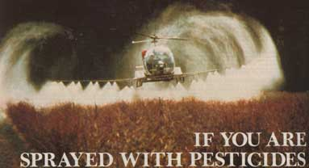
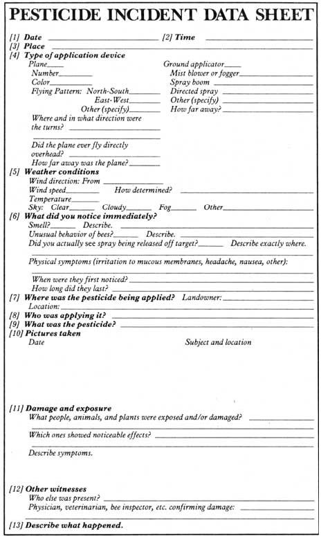

You won't get caught by surprise-or be unprepared-if you heed this citizen activist'sadvice.
First of all, there are several important steps you should take now, before an incident occurs. To begin, find out who might be spraying in your area-neighbors, county weedcontrol and road-maintenance person nel, local pesticide applicators, power companies, etc.-and let those people know that you do not want any such chemicals drifting onto your land. You may think you shouldn't have to do this, but keep in mind that many of these folks might believe they'd actually be doing you a favor by killing that "scruffy waste brush" (your woodlot-to-be) or "all those nasty bugs" (your natural pest-control agents or honey producers).
You should also display "DO NOT SPRAY" signs-marked with arrows and giving the distances to your acreage's appropriate bordersat every roadside corner around your property, to remind the highway-maintenance spray crew to leave your land alone. In addition, call and write your county engineer (or whoever else is responsible for taking care of streets in your area) and ask that person to make certain that all brush-killing sprays are turned off before the maintenance trucks reach your property. At the same time, ask him or her how you can care for your section of the highway right-of-way. Learn which vegetation needs to be controlled where, and why.
Now that you've taken all the preventive steps that you can, arm yourself with the information you'll need if (and it's still quite possible) a spraying incident does occur. To begin, obtain two phone numbers: [1] that of your regional office of the Environmental Protection Agency (EPA) . . . and [2] that of the state agency-it's usually associated with the agriculture department-in charge of enforcing the pesticide-use laws.
If you don't know where the nearest EPA office is, you can find out by calling National Pesticide Information Clearinghouse -toll free-at 800/531-7790 (or 800/2927664 for Texas residents). And if you aren't certain about which state agency to contact (and if the NPIC can't tell you), ask your regional EPA office. At any rate, put the two phone numbers where you can quickly find them.
(Note: The EPA directly enforces the pesticide-use law in Nebraska, Wyoming, and Colorado . . . so residents of those areas have no state agencies to contact. On the other hand, California residents will want to record the phone number of the appropriate county, not state, agriculture commissioner.)
Imagine this scenario: It's two o'clock in the afternoon, and you're at home-just settling down to enjoy a late lunch-when the quiet atmosphere is broken by the drone of an approaching crop-dusting plane. But wait a minute . . . what is that guy doing? Why, he's spraying practically right over your house! Worse yet, the wind is blowing toward you, and your children are playing in the yard!
What can you do?
A few years ago, I had no idea how to handle such a situation. And when an incident like that did, indeed, occur, it took me a long time to figure out what I should have done. I'm grateful, though, that others can profit from my experience, by learning how to deal with this sort of attack before being confronted with it.
As soon as a potentially toxic spray starts drifting your way, you'll face two immediate concerns: [1] what to do now to protect yourself, your family, and your property . . and [2] what to do now to prevent a recurrence.
If you don't know exactly which chemical is being sprayed and how you can expect to react to it, rush yourself and everyone else inside the house. Close the windows and doors . . . and shut off any air conditioners or fans that would otherwise pull outside air into your home. If you can, take steps to move your pets and livestock into shelter.
If-despite your efforts-you suspect that some poison has landed on you, wash immediately (preferably with a detergent) and
Protecting bees from pesticides involves more than simply keeping the sprays away from your own property, because the winged honeymakers can forage at a distance from their homes. The best way to safeguard these beneficial insects is to indicate your apiary locations on a map, and draw a circle with a 3-mile radius around each. This will serve as an estimate of your bees' flying range. (If the available bee forage is quite dense locally and limited beyond, you might want to use a 1-1/2- or 2-mile radius for your measurements.)
Next, send a copy of the map to anyone who might spray insecticide within those areas. Ask these people to let you know before they apply the toxic chemicals (and explain how much notice you'll need). Be sure, too, to give them a phone numberor several-where you or a reliable neighbor can be reached. (Of course, if other people in your area keep bees, you can likely work more efficiently and effective ly together.)
If you are notified of an impending spraying of a highly toxic but short-lived insecticide, close up your hives on the morning of the event, before the bees start to fly. (In hot weather, cool the insects' homes by draping wet burlap over the front of each hive.) When the applicator intends to use a longer-lasting toxin, such as Penncap-M or Furadan, on a crop that attracts honeybees, you may have to move your hives out of the area temporarily.
To help reduce such incidents, however, you can try to work with neighbors to encourage them to learn how to control pests without harming your bees. Discuss with them the use of less-toxic chemicals or alternative insect controls. Suggest ways to monitor pest levels. And point out that not spraying a crop that bees work while the plants are in bloom will benefit the growers-by increasing their yields-as well as you.
Last, find out your local or state Cooperative Extension Service may well be able to help-which chemicals are recommended for any nearby crops that honeybees might visit. The booklet "Reducing Pesticide Hazards to Honeybees" (it's available for $2.50 postpaid from Agricultural Sciences Publications, University of California, Dept. TMEN, 1422 Harbour Way South, Richmond, California 94804) is a valuable guide for anyone trying to determine the relative hazards of various pesticides to honeybees.
change your clothes. (These precautions are especially important in the case of small children who might have been sprayed.) Furthermore, don't use any possibly contaminated food, clothing, or water until you have learned about the pesticide's effects.
And if you feel at all ill, call your doctor at once.
In order to keep that sprayer from ever poisoning you again, you'll have to gather some evidence right away. Since I know (from experience) how difficult it is to think clearly when you're angry and in a panic, I've given you a form, the "Pesticide Incident Data Sheet" (see page 79), to fill out. First of all, you'll need to note anything that will help identify the pesticide applicator. If you've been sprayed aerially, try to get the plane's N number. (If you can't see it, a description of the aircraft will do.)
You won't need to fill out the rest of the data sheet at the moment, but don't put off, for more than a day, writing a chronology of the episode. Memories fade, and to refresh yours, you'll need that brief blow-by-blow account.
Above all, work fast. You should be able to corral everyone inside, jot down those notes (such as the airplane's description) that you can take only while the incident is under way, and phone the state pesticidelaw enforcement agency . . . all while that plane is still circling overhead.
Give the person at the agency a brief account of the event, and say you suspect a violation of the pesticide law. Tell him or her that you want someone to come investigate as soon as possible. In fact, try to get a commitment from an official to arrange a visit right away . . . because you can expect that residues will disappear in two to ten days, and those chemical traces will be important-perhaps some of the most important-pieces of evidence you can get. In addition, be sure to find out if you have to file a report with the state in order to meet the statute of limitations for filing a civil suit.
Next, call the regional EPA office and repeat the foregoing process. The individuals there will probably tell you that they'll simply refer your case to the state enforcement agency. That's fine . . . they're supposed to do that. The purpose of your call to the EPA is to alert its staff to the incident in hopes that they'll check up on the state agency to make certain it handles your case promptly.
Unfortunately, there aren't many regions where an individual can report a case of pes ticide misuse and then simply sit back and watch the state take charge of the situation. In fact, in most areas you'll need to prod your local pesticide-law enforcement officials to get them to take the sort of action (such as suspending a sprayer's license or pressing criminal charges) that could prevent the same tragic incident from happening again and again. Then too, you may find that the damage you sustained was substantial enough-in monetary terms-to merit a personal civil suit.
At any rate, start your follow-up operation by calling the applicator, farmer, or landowner who was responsible for the spraying . . . to find out what pesticide was used. You can then learn about the probable acute effects of exposure to that substance (and what steps to take to lessen those effects) by calling the National Pesticide Information Clearinghouse mentioned before.
Be sure, too, to request a copy of the pesticide's label from NPIC (or from your state enforcement agency). According to the law, any applicator-private or commercialmust abide by all label instructions and precautions (and these often include the warning, "Do not allow pesticide to drift off target"). That label can be the most important follow-up tool you can get . . . so ob tain a copy of it, study it, and point out-in writing-to your state official any way in which the applicator violated the toxin's usage instructions. (Send a copy of your letter to the regional EPA office, as well.)
If a weedkiller drifts onto your property and you believe some of your valuable plants may be affected, you should try to document their condition before and after any damage becomes apparent. The effects of most herbicides become visible after one to seven days, so any photographs taken immediately after the spraying occurs will show the condition of the plants before the chemical does its damage. Furthermore, while you shoot, make a note of which plants are being photographed and from what angles the pictures are being taken. Try to get a series of shots that focus on the plants' leaves and growing tips, and also establish the crops' or trees' location and size relative to recognizable landmarks. Then after the symptoms appear, take a series of followup pictures from the same positions as the earlier photos.
See a doctor if you, your family, or your animals show any signs of illness. (Whenever possible, take the pesticide's label with you.) Having an examination can prove valuable for reasons of both health and legal documentation.
Should you believe that insecticide might have drifted onto your beehives, examine the insects as soon as you can. Signs that may indicate poisoning are unusual behavior and the presence of few live bees in the hive . . . or many dead ones-say, more than 100 per dayin or around it. Call your state's apiary inspector and ask him or her to make an examination for evidence. Also, collect a handful of dead bees, put them in a tightly sealed jar or plastic bag, and preserve them in the freezer for possible future chemical analysis.
As you gather evidence, always ask yourself if there may be any other causes for the symptoms you've noticed. After all, you may well have to answer arguments presented by a combative sprayer. So try to collect evidence discounting such "outside" possibilities as "The only reason you're sick is that you have a cold" . . . "Sure your trees died. They were infested with bugs" . . . "There wasn't enough oxygen to support all the fish in your pond" . . . and so on.
Be persistent in your efforts, too, and keep in touch with your enforcement officer. (Do, however, try to distinguish between an investigator who's doing all he or she can and one who really needs your constant prodding.)
Have you found it disturbing that I've been concentrating on things you should do to protect yourself and your property from the chemicals someone else was using? If so, you aren't alone. In fact, there are national, regional, and state-wide organizations that are devoted to stopping pesticide misuse and encouraging safe insect and weed control. Therefore, your own efforts can have more effect if you join with others . . . to spread the word and to convince legislators and state officials of the need for just, safe, and properly enforced laws. (Should your case be against a government agency, such as the Forest Service, you'll probably find outside support to be essential.)
Jay Feldman, who's the coordinator of NCAMP, the National Coalition Against Misuse of Pesticides, can help you to get together with people who share your concern . . . and to obtain other useful information. You can reach Jay at NCAMP, Dept. TMEN, 530 7th Street S.E., Washington, D.C. 20003 (202/543-4312). [EDITOR'S NOTE: While this group provides its assistance absolutely free of charge, we at MOTHER ask that-to help defray any expense-you be courteous enough to send along a dollar or two with your request for information.]
NCAMP can also use your support, because the nation's law governing pesticide safety and enforcement-the Federal Insecticide, Rodenticide, and Fungicide Act (FIRFA)-is up for reconsideration in Congress this year, and faces strong industry opposition. You can join NCAMP, and receive a periodic newsletter on related political developments, for $5.00.
Remember, as long as violations in the use of pesticides are not reported and then followed up, the same misuses will be repeated. It's up to each of us to take on the duties of preparing for and, if necessary, fighting against unnecessary spraying. By taking care of ourselves, we can-in the end - help others.
Good luck!
Most people, after being sprayed with a pesticide, are concerned primarily with how to keep such an incident from happening again. However, you may also want to try to collect "damage" money in order to replace the bees, trees, and other things or creatures that have been harmed or killed as a result of the spray. In that case, you'll have to prepare to prosecute.
First, notify the offending applicator about your damaged property and its estimated value. Since many sprayers settle claims quickly-in order to protect their reputations-that may be all you have to do.
At the same time, though, be sure to file any required reports in case you do have to go to court. This is particularly important if your slate has a statute of limitations on civil suits. (In Kansas, for instance, it's been noted that some applicators "promise" and "repromise" to make amends, while they merely wait for that state's 60day time limit to run out/)
If the sprayer doesn't settle quickly, and if the cost of damages falls within the appropriate financial limitations, consider filing for redress in small-claims court to avoid costly lawyer and consultant fees. In that event, you won't need an attorney or witnesses, but it would still be best to document your case carefully in the manner described in this article.
Should you feel you do have to hire an attorney, try to find one who is familiar with pesticide laws. You may also need extra documentation to show [1] that the damage was caused by the applicator's use of a pesticide and [2J the extent of the damage.
The forms and photos that I've recommended, along with the report prepared by your state enforcement agency (if it responded promptly), should be enough to prove the violation in most states. However, you might also want to look into a valuable reference in this regard. . . which is an annotation to a decision in the North Dakota Supreme Court, Christensen v. Midstate Aerial Applicators Corp., "Liability for Injury Caused by Spraying or Dusting of Crops"; 37 ALR 3d 833. (You should be able to find this document in a local law library.)
The following hints may help you establish the dollar amount of any harm done to your property.
Damaged shade trees and ornamentals:
Inventory the trees in the spring following the spraying. Then for each one lost or injured, list the condition, height, diameter, and age. Your county agent or extension forester should be able to give a damage estimate based upon that information. (There are also consultants who will testi fy in court concerning the value of trees, but they tend to charge high fees.)
Bee kills: Your state apiary inspector can estimate the hives' percentage of beer killed. (See the section entitled "If You Have Bees" for information about protecting your honeymakers.)
Crop damage: Estimate the loss by comparing your current harvest to yields from past years, and/or to those from similar, unaffected fields.
EDITOR'S NOTE: Terry Shafer is cofounder of Kansans for Safe Pest Control and editor of that group's quarterly newsletter. While the organization's 12-page periodical is focused on pesticide issues in Kansas, it contains much information that could be useful for people in other states, as well. You can join KSPC and receive the newsletter by sending $5.00 to Kansans for Safe Pest Control, Mike Coker, Dept. TMEN, 635 Gage Boulevard, Topeka, Kansas 66606.
|
 CLOCKWISE FROM RIGHT: To document herbicide damage, take a series of photographs before and after the harm appears. These two pictures show a young walnut orchard before... and after 2, 4-D drifted onto the trees.... Spray from aerial applicators can drift quite far from the intended application site. |
 |
 |